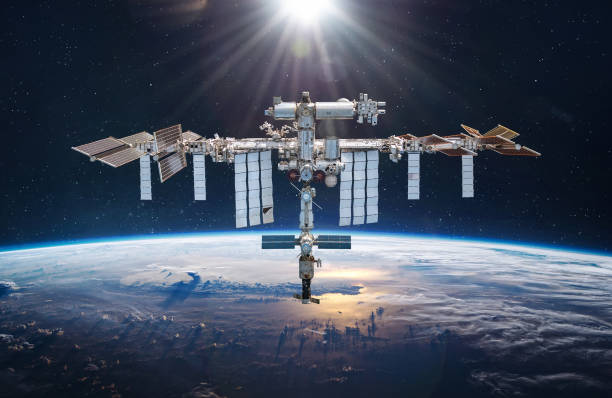
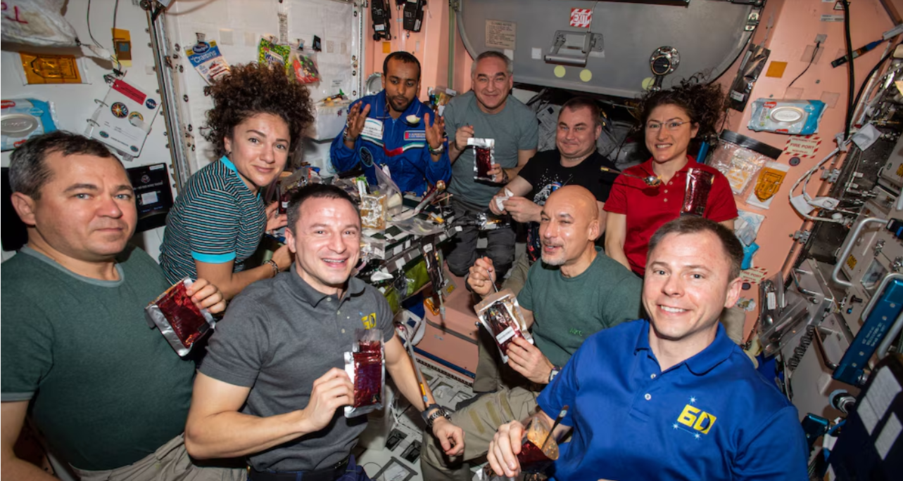
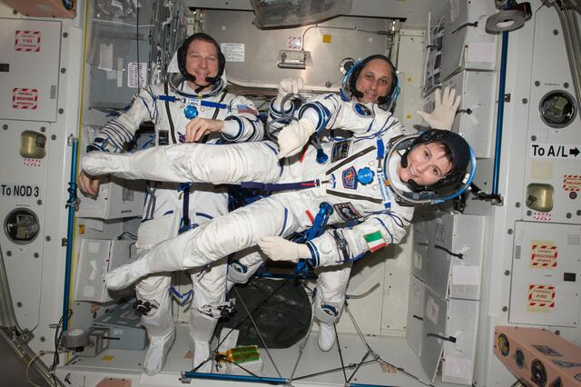
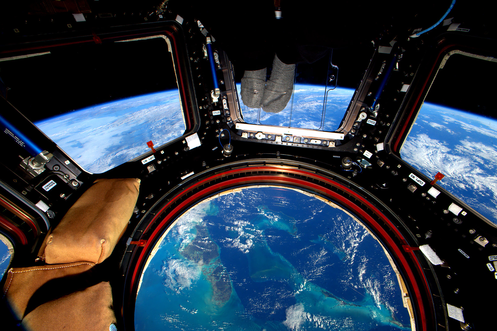

1. Introducción
La Estación Espacial Internacional (ISS, por sus siglas en inglés International Space Station) es el laboratorio espacial más grande jamás construido. Orbitando la Tierra a una altitud promedio de 400 km y viajando a más de 28.000 km/h, la ISS representa uno de los mayores logros tecnológicos y de cooperación internacional de la historia.
Es un símbolo del potencial humano cuando ciencia, tecnología y voluntad política se unen con un propósito común: expandir el conocimiento y la presencia de la humanidad más allá de los límites de nuestro planeta.
2. Historia y construcción

La idea de una estación espacial permanente se remonta a las primeras décadas de la carrera espacial, pero fue recién en 1998 cuando comenzó la construcción de la ISS, gracias a un acuerdo internacional entre las agencias espaciales de Estados Unidos (NASA), Rusia (Roscosmos), Europa (ESA), Japón (JAXA) y Canadá (CSA).
El primer módulo lanzado fue el Zarya, de origen ruso, el 20 de noviembre de 1998. Luego se fueron acoplando otros módulos: Unity, Zvezda, Destiny, Columbus, Kibo y muchos más. A lo largo de los años, la ISS se convirtió en una estructura gigantesca compuesta por más de 15 módulos presurizados, paneles solares, sistemas de soporte vital, laboratorios y compartimientos de acoplamiento.
Desde noviembre del año 2000, la ISS ha estado habitada de forma continua por astronautas de diferentes nacionalidades, lo que la convierte también en el hogar humano más constante en el espacio.
3. Estructura y funcionamiento
La ISS tiene una estructura modular, diseñada para ser ampliada y modificada en el espacio. Está compuesta por:
- Módulos habitables y científicos, como Destiny (EE.UU.), Columbus (Europa), Kibo (Japón) y Zvezda (Rusia).
- Estructura de soporte (truss) que sostiene los paneles solares y sistemas térmicos.
- Paneles solares gigantes, que suministran la energía necesaria para operar todos los sistemas.
- Sistemas de soporte vital, que reciclan el aire, el agua y gestionan los residuos.
- Módulos de acoplamiento, que permiten el ingreso y salida de naves tripuladas o de carga.
La estación cuenta con sistemas avanzados de navegación, orientación y comunicación, además de protección contra micrometeoritos.
Video: Recorrido por la ISS
4. Vida diaria a bordo
La vida en la ISS es muy diferente a la vida en la Tierra. La microgravedad afecta todo: desde cómo fluyen los líquidos hasta cómo duerme una persona.
- Los astronautas duermen flotando dentro de sacos de dormir amarrados a la pared.
- Comen comida deshidratada o envasada al vacío, utilizando cucharas con velcro.
- Usan baños especiales que succionan residuos con sistemas de vacío.
- Se ejercitan al menos 2 horas al día para evitar la pérdida de masa muscular y ósea.
- Realizan experimentos, mantenimiento y caminatas espaciales.
5. Investigación científica
Uno de los principales objetivos de la ISS es ser un laboratorio orbital. En condiciones de microgravedad, los científicos pueden estudiar fenómenos imposibles de observar en la Tierra. Algunas áreas de investigación incluyen:
- Biología y medicina: estudio de células, envejecimiento, respuesta del cuerpo humano.
- Tecnología: impresión 3D en el espacio, nuevos materiales, sensores.
- Ciencia de los materiales: fusión de metales, fluidos, combustión en microgravedad.
- Clima y observación de la Tierra: uso de cámaras e instrumentos para monitorear huracanes, incendios, deshielos y más.
Los resultados obtenidos en la ISS han contribuido a mejorar tratamientos médicos, optimizar diseños tecnológicos y preparar futuras misiones de larga duración.
6. Cooperación internacional
La ISS es un proyecto sin precedentes de cooperación entre países. Participan:
- NASA (Estados Unidos)
- Roscosmos (Rusia)
- ESA (Europa)
- JAXA (Japón)
- CSA (Canadá)
Cada agencia aporta módulos, tecnologías, tripulación y experimentos. A lo largo de los años, astronautas de más de 20 países han vivido y trabajado en la estación. Esta colaboración ha demostrado que, más allá de las fronteras políticas, la ciencia y la exploración pueden unir a la humanidad.
| Agencia | País |
|---|---|
| NASA | Estados Unidos |
| Roscosmos | Rusia |
| ESA | Europa |
| JAXA | Japón |
| CSA | Canadá |
7. Transporte y logística
Para llevar suministros y tripulación, la ISS depende de diversas naves espaciales:
- Tripuladas: Soyuz (Rusia), Crew Dragon (SpaceX)
- Cargueras: Progress (Rusia), Cygnus (EE.UU.), HTV (Japón)
Cada misión debe coordinarse cuidadosamente para evitar colisiones y garantizar el éxito del acoplamiento. La logística también incluye el reemplazo de piezas, eliminación de residuos y transporte de muestras científicas.
8. Datos curiosos
- La ISS da una vuelta completa a la Tierra cada 90 minutos, lo que significa que los astronautas ven 16 amaneceres y 16 atardeceres por día.
- Pesa más de 420 toneladas.
- Desde la Tierra, puede verse como un punto brillante cruzando el cielo nocturno.
- Tiene más espacio habitable que una casa de 5 habitaciones.
- La ISS está protegida por un escudo magnético parcial contra la radiación cósmica, pero los astronautas aún están expuestos a niveles más altos que en la Tierra.
9. Impacto y futuro
La Estación Espacial Internacional ha cambiado la manera en que la humanidad entiende el espacio. Gracias a ella, hoy sabemos más sobre la salud humana en gravedad cero, la posibilidad de colonizar otros planetas y la importancia de la colaboración científica internacional.
En el futuro, la ISS será reemplazada o complementada por nuevas estaciones, como la estación lunar Gateway o estaciones privadas. No obstante, su legado perdurará como uno de los logros más importantes de la ciencia moderna.
Para más información sobre las futuras estaciones espaciales, visitá este artículo en FreeThink.
10. ¿Qué opinás del proyecto?
¡Gracias por tu comentario!